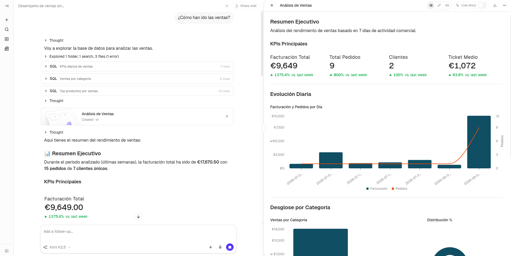

flowchart LR
o[("Odoo<br/>PostgreSQL")] --> d["dlt"]
d --> b[("DuckDB<br/>raw")]
b --> t["dbt"]
t --> v[("DuckDB<br/>vault")]
v --> t2["dbt"]
t2 --> g[("DuckDB<br/>oro")]
g --> r["Rill"]
g --> n["nao"]
g --> s["Soda"]
t2 -.-> doc["dbt docs"]
t2 -.-> n
s -.-> m[("DuckDB<br/>meta")]
t2 -.-> m
m -.-> r
m -.-> n
classDef origen fill:#ececf0,stroke:#868d9c,stroke-width:1.5px,color:#2b2f3a
classDef carga fill:#fae3c8,stroke:#bf7f28,stroke-width:1.5px,color:#573809
classDef almacen fill:#d5e6f5,stroke:#3d7cb0,stroke-width:1.5px,color:#12354e
classDef transformacion fill:#d7eddc,stroke:#4a9463,stroke-width:1.5px,color:#1c4a2e
classDef explotacion fill:#e6ddf5,stroke:#7457bd,stroke-width:1.5px,color:#332757
classDef documentacion fill:#d7eddc,stroke:#4a9463,stroke-width:1.5px,color:#1c4a2e,stroke-dasharray:4 3
classDef meta fill:#d9efec,stroke:#3a8f8a,stroke-width:1.5px,color:#0f3f3c
class o origen
class d carga
class b,v,g almacen
class t,t2 transformacion
class r,n explotacion
class doc,s documentacion
class m meta
Apéndice E — Ejercicio: un lago de datos entero
El resto del libro construye sobre la secretaría académica, un origen inventado a medida para que cada capítulo pueda enseñar una cosa sin que estorben las demás. Este apéndice propone el ejercicio contrario: partir de un sistema real y llegar hasta el panel, con todo lo que eso trae. El origen es Odoo, un ERP de código abierto con datos de demostración, y la gracia está precisamente en que su base de datos no está diseñada para que la analicemos.
Todo lo necesario está en el repositorio. Basta con este apéndice y los ficheros que se citan para reconstruirlo desde cero, y conviene hacerlo en ese orden, porque cada paso deja algo que el siguiente necesita.
NotaEs un ejercicio aparte
Este montaje no continúa el ejemplo de la academia ni comparte nada con él. Los puertos están elegidos para que ambos puedan convivir en la misma máquina, así que se puede tener el libro renderizando y este lago levantado a la vez.
E.1 Lo que se va a levantar
Ocho piezas, todas de código abierto, cada una haciendo exactamente un trabajo.
Las flechas de puntos no llevan datos, llevan lo que sabemos sobre los datos. dbt docs no transforma nada, se limita a publicar lo que dbt sabe de sus propios modelos. La que llega a nao es de la misma naturaleza y es la que hace interesante a esa pieza: el agente recibe el dato por un lado y el proyecto de dbt por el otro, porque para contestar bien no le basta con ver las tablas, necesita saber qué decidimos al construirlas.
Y las que confluyen en meta son las que casi nunca se dibujan. Ahí acaban el resultado de las pruebas de dbt, la frescura de las fuentes y los avisos de Soda, que de otro modo se quedarían en tres ficheros JSON que nadie vuelve a abrir. Desde ahí las leen el panel y el agente, que es lo que permite preguntar si un número es de fiar en el mismo sitio donde se mira el número.
| Pieza | Papel | Dónde queda |
|---|---|---|
| Odoo 16 y PostgreSQL 15 | Sistema origen, con los módulos de ventas y recursos humanos y sus datos de demostración | http://localhost:8069 |
| dlt | Ingesta de Odoo al almacén | pipelines/odoo_extract.py |
| DuckDB | El almacén, las cuatro capas | warehouse/warehouse.duckdb |
| dbt | Data Vault y capa de explotación | dbt_project/ |
| dbt docs | Diccionario de modelos y grafo de linaje | http://localhost:8081 |
| Soda | Vigilancia de calidad sobre la capa oro | soda_project/ |
| Rill | Paneles de exploración | http://localhost:9010 |
| nao | Agente analítico sobre la capa oro | http://localhost:5005 |
Soda es la única sin dirección web: no tiene interfaz propia en este montaje a propósito, porque su resultado no acaba en un informe suyo sino en el almacén, junto al dato que vigila.
Los puertos no son los de costumbre y la razón es evitar choques: el 3000 lo usa Evidence en el capítulo de inteligencia de negocio, el 8585 lo ocupa OpenMetadata en el apéndice de metadatado y el 9009 es el de un Rill arrancado en local como se ve en el apéndice de exploración. Aquí PostgreSQL se publica en el 5433, Rill en el 9010 y la documentación en el 8081 (dbt docs sirve por defecto en el 8080, que es de los puertos más disputados de cualquier portátil). nao se queda en su 5005 de siempre, que no lo disputa nadie.
E.2 Antes de empezar
Hace falta Docker con el complemento compose y unos 4 GiB de memoria libre. De disco, unos 3 GiB para llegar hasta el panel y unos 7 GiB si se monta también el agente: la imagen de nao ocupa 3,5 GiB ella sola, más que todo lo demás junto. Es una cifra que conviene saber antes y no a mitad de descarga, y una razón perfectamente legítima para dejar esa última pieza para otro día: el ejercicio está completo sin ella.
La primera ejecución tarda lo que tarde la descarga.
E.3 Puesta en marcha
E.3.1 Levantar el origen
docker compose up -dEsto arranca PostgreSQL, crea la base de datos de Odoo con los módulos de ventas y recursos humanos y sus datos de demostración, y deja el ERP escuchando. La creación de la base de datos la hace un servicio de un solo uso (odoo-init) en lugar del asistente web, que es lo que suele proponerse y que tiene el inconveniente de no ser reproducible: obliga a rellenar un formulario a mano y a acordarse de marcar la casilla de los datos de demostración.
Los módulos se instalan de una vez en la orden del servicio, y no son gratis en el sentido que importa aquí:
command: ["odoo", "-d", "odoo_demo", "-i", "sale_management,hr", "--stop-after-init"]El primer arranque tarda un par de minutos en inicializar la base. Se sabe que ha terminado cuando el servicio de inicialización ha salido con código cero:
docker inspect dl-odoo-init --format '{{.State.ExitCode}}'A partir de ahí Odoo responde en http://localhost:8069, con usuario admin y contraseña admin. Merece la pena entrar y mirar los pedidos de venta, aunque solo sea para tener presente cómo se ven los datos antes de que los toquemos.
E.3.2 Cargar la capa bronce
docker compose run --rm extractdlt lee diez tablas de Odoo y las deja en el esquema raw sin más cambio que el nombre. Al terminar informa de lo cargado, y estos son los números que salen con los datos de demostración:
raw.raw_customers: 66
raw.raw_orders: 20
raw.raw_order_lines: 44
raw.raw_products: 34
raw.raw_product_templates: 29
raw.raw_product_categories: 9
raw.raw_employees: 20
raw.raw_departments: 7
raw.raw_sales_teams: 5
raw.raw_countries: 250Si esos números no cuadran, no tiene sentido seguir: algo ha fallado en el origen y todo lo que venga después heredará el problema.
ImportanteOnce columnas de cincuenta y ocho
hr_employee es la tabla que obliga a pensar antes de copiar. Tiene cincuenta y ocho columnas y en ODOO_TABLES solo se declaran once, porque entre las otras cuarenta y siete están el número de la seguridad social, el pasaporte, la fecha de nacimiento, el estado civil, el género y el permiso de trabajo.
Son datos personales de categoría especial y el almacén analítico no tiene ninguna razón para verlos. Que la ingesta declare las columnas una a una en lugar de hacer un SELECT * deja de ser una manía de estilo y pasa a ser el control que lo impide: con la lista explícita, incorporar un dato sensible exige escribirlo, y eso aparece en la revisión del cambio. Con SELECT *, entra solo el día que alguien añada un campo en el ERP y nadie se entera.
E.3.3 Construir el vault
docker compose run --rm transformdbt encadena las tres capas que quedan (staging, vault y explotación) y a continuación ejecuta las pruebas. La salida termina así:
Done. PASS=216 WARN=0 ERROR=0 SKIP=0 TOTAL=216Los doscientos dieciséis incluyen treinta y siete modelos y ciento setenta y nueve pruebas. Que pasen todas no significa que el modelo sea bueno, pero que falle una sí significa que algo está mal, y en este proyecto hay pruebas puestas justo donde el Data Vault se rompe con más facilidad.
E.3.4 Las dos cosas de una vez
Los dos pasos anteriores pueden ejecutarse como un solo proceso, porque dlt sabe lanzar un proyecto dbt por su cuenta:
docker compose run --rm pipelineEstá en pipelines/run_pipeline.py y son tres líneas de fondo: se crea el pipeline, se carga y se le pasa el mismo objeto a dlt.dbt.package(), que deduce de él a qué base de datos tiene que apuntar dbt. La dependencia entre cargar y transformar no hay que declararla en ningún sitio, porque si la carga lanza una excepción la línea siguiente no llega a ejecutarse.
Importante
run_all no ejecuta las pruebas
El nombre engaña. run_all() hace dbt deps, dbt seed y dbt run, es decir el equivalente a dbt run y no a dbt build: las pruebas de los modelos no entran. Quedarse ahí dejaría el vault sin sus ciento setenta y nueve comprobaciones y sin enterarse. Por eso el script pide las pruebas aparte, con transformacion.test(), y suma los dos resultados antes de decidir si ha ido bien.
E.3.5 Ver el linaje
Cada ref() y cada source() del proyecto es una dependencia declarada, así que dbt conoce el grafo entero sin que nadie se lo cuente. Publicarlo como sitio web son dos pasos:
docker compose run --rm transform dbt docs generate
docker compose --profile docs up -d docsEl primero deja en dbt_project/target/ el manifest.json (los modelos y sus dependencias) y el catalog.json (las columnas y los tipos de cada relación, que sí hay que ir a preguntarle a DuckDB). El segundo sirve esos ficheros en http://localhost:8081. El botón azul de la esquina inferior derecha abre el grafo:

Se lee de izquierda a derecha y es exactamente el recorrido que cuenta este apéndice: en verde las diez tablas de raw que dejó dlt, y en azul las diez vistas de staging, los seis hubs, los cinco enlaces, los siete satélites, las dos tablas de referencia y los siete modelos de explotación. Los nodos satelite_grano_unico y cobertura_comercial no son modelos sino las pruebas singulares de dbt_project/tests/, porque en el grafo de dbt las pruebas son nodos como cualquier otro: cuelgan de aquello que comprueban, que es justo lo que permite a dbt build ordenar la ejecución sin que nadie escriba las dependencias a mano.
NotaServir no bloquea el almacén, generar sí
dbt docs serve es un servidor de ficheros estáticos: reparte el manifest.json y el catalog.json que ya están en target/ y no abre DuckDB en ningún momento. Por eso este servicio sí convive con Rill, al contrario que extract, transform o pipeline.
Quien sí abre el almacén es dbt docs generate, porque el catálogo de columnas tiene que consultarlo. Con Rill levantado falla con el mismo Conflicting lock is held in PID 0 de siempre, de modo que el orden que funciona es generar la documentación primero y arrancar el panel después.
E.3.6 Escribir la documentación una sola vez
Las descripciones que aparecen al pinchar un modelo salen de los description: de los cuatro ficheros YAML del proyecto. No hay nada automático en esa parte: lo que no esté escrito ahí sale vacío, y un diccionario de datos sin descripciones es poco más que la lista de columnas que ya da la base de datos.
Con treinta y siete modelos esa escritura tiene un problema que con cuatro no se notaba. Las columnas load_date, record_source y hashdiff aparecen en los veinte modelos del vault, y describirlas en cada YAML son veinte copias del mismo párrafo esperando a desincronizarse en cuanto alguien corrija una. La respuesta de dbt son los bloques de documentación: texto con nombre, guardado aparte, que se referencia desde donde haga falta.
{% docs dv_load_date %}
Momento en el que esta fila entró en el almacén. **No es una fecha de
negocio**: no dice cuándo ocurrió el hecho, dice cuándo nos enteramos.
{% enddocs %}Y en el YAML del modelo:
- name: load_date
description: "{{ doc('dv_load_date') }}"Los bloques viven en dbt_project/docs/, declarado en dbt_project.yml con docs-paths. Son quince y se reparten en dos ficheros con propósitos distintos, que es la separación que conviene copiar:
columnas_vault.mddescribe las columnas técnicas del patrón (las claves hash, la fecha de carga, la huella de cambios). Contesta a “¿qué es esta columna?”.entidades.mddescribe las entidades de negocio (qué es un cliente aquí, qué es un empleado, por qué el equipo comercial no tiene hub). Contesta a “¿qué es esta cosa?”, que es la pregunta que más discusiones ahorra y la que ningún esquema de base de datos responde. Es el germen de un glosario, y por eso se referencia tanto desde el hub como desde el modelo de la capa oro: la misma definición sale en los dos sitios.
Hay un bloque con nombre reservado, __overview__, que sustituye la portada del sitio por la que se quiera. La que trae el proyecto explica las cuatro capas y por dónde empezar a mirar, que es más útil que la página genérica de dbt para quien abre esto por primera vez.
El límite del grafo se ve mejor con la imagen delante: dbt solo dibuja lo que pasa por sus ref() y sus source(). El tramo de Odoo a raw lo hizo dlt y aquí no existe (las tablas de raw aparecen como el principio del mundo, cuando son la mitad de la historia), y el panel de Rill que consume la capa oro tampoco. Coser los tres tramos es precisamente el trabajo de un catálogo de gobierno, y cómo se reconstruye ese linaje completo a partir del manifest.json de dbt y del esquema que deja dlt está en el apéndice de metadatado.
E.3.7 Vigilar la calidad
Llegados aquí hay ciento setenta y nueve pruebas de dbt en verde, y conviene fijarse en dos cosas que no se saben todavía.
La primera es si el dato sigue llegando. Las fuentes tienen declarada su frescura desde el principio, en _stg_sources.yml:
sources:
- name: raw
loaded_at_field: _extracted_at
freshness:
warn_after: {count: 12, period: hour}
error_after: {count: 24, period: hour}Y esa declaración no la ejecutaba nadie. dbt build no incluye la frescura: hay que pedirla aparte.
docker compose run --rm transform dbt source freshnessLa segunda es todo lo que las pruebas de dbt no preguntan por diseño. Una prueba de dbt comprueba que el modelo cumple lo que dijimos al escribirlo: que la clave es única, que el enlace no cuelga. La calidad de datos es otra cosa, es vigilar que el mundo real sigue pareciéndose a lo que asumimos, sabiendo que no lo hará. Esa mitad la cubre Soda, con el reparto que explica el apéndice de calidad.
docker compose run --rm sodaCon los datos de demostración el escaneo termina así:
1/16 checks WARNED:
customer_360 in almacen
País informado en la ficha de cliente [WARNED]
check_value: 34.85Merece la pena parar en ese número. El 34,85 % de las fichas de cliente no tiene país, y ninguna de las ciento setenta y nueve pruebas de dbt lo había mencionado, porque no hay nada incorrecto: Odoo no obliga a informar ese campo y el modelo nunca prometió que estuviera. Es exactamente el tipo de cosa que se descubre cuando alguien filtra un panel por país y le faltan un tercio de los clientes.
Por eso avisa en lugar de fallar:
- missing_percent(country_name):
warn: when > 20 %
fail: when > 60 %
name: "País informado en la ficha de cliente"Un umbral que corta la carga por esto convierte un dato conocido del origen en una incidencia de plataforma, y lo que consigue a la larga es que alguien suba el umbral hasta que deje de molestar.
NotaLo que el núcleo de Soda no puede hacer
Dos de los controles más útiles de SodaCL no están en checks/oro.yml, y no es un olvido:
- change avg 7d for row_count < 25 %
- schema:
warn:
when schema changes: anyLos dos necesitan historia, y el núcleo de código abierto no la guarda: cada escaneo empieza de cero y no sabe qué dio el de ayer. Esa memoria la pone Soda Cloud, que no es abierto. Aquí la historia nos la guardamos nosotros en meta.perfil_historico, que es más trabajo y tiene la ventaja de que la serie queda en el almacén, consultable con SQL junto a todo lo demás.
Dónde acaba todo esto (y por qué no en dbt docs)
Tenemos tres comprobaciones distintas y tres artefactos que no se hablan: run_results.json con las pruebas, sources.json con la frescura y el JSON de Soda con los avisos. Ninguno se consulta con SQL, y aquí está lo que sorprende a casi todo el mundo:
El sitio de documentación de dbt no enseña ninguno de los tres. Su index.html solo carga manifest.json y catalog.json. Se puede comprobar:
grep -o "sources\.json\|catalog\.json\|manifest\.json\|run_results\.json" \
$(python -c "import dbt,os;print(os.path.dirname(dbt.__file__))")/task/docs/index.html | sort -uDe modo que en dbt docs se ve que existe una prueba y que se declaró una frescura de doce horas, y nunca si están en verde. Es un catálogo de definiciones, no de estado, y confundir las dos cosas es fácil porque la interfaz no lo advierte en ninguna parte. La pregunta “¿me puedo fiar de esta tabla?” no se responde ahí.
Se responde donde están los datos, que es lo que defiende el apéndice de calidad. El último paso recoge los tres artefactos y los carga en un esquema meta del propio DuckDB:
docker compose run --rm metadatosmeta.activos: 47
meta.controles: 195
meta.frescura: 10
meta.perfil: 7
Veredicto de la capa publicada:
apto: 6
con avisos: 1Los ciento noventa y cinco controles son las ciento setenta y nueve pruebas de dbt más los dieciséis de Soda, en una sola tabla con una columna que dice quién los ejecutó y otra que dice si cortan la carga. Y los cuarenta y siete activos incluyen las diez fuentes, que son las únicas que tienen frescura: si raw_orders deja de llegar, todo lo que hay debajo sigue en verde durante días porque el problema no está en las transformaciones.
A partir de ahí, fiarse de una tabla es una consulta:
SELECT activo, capa, controles, avisos, fallos, veredicto, escaneado_en
FROM meta.veredicto
WHERE capa = 'analytics'
ORDER BY fallos DESC, avisos DESC;Esa vista tiene una cuarta categoría además de apto, con avisos y con fallos, y es la más útil de las cuatro: sin vigilancia. Una tabla que no falla ningún control porque no tiene ninguno no es una tabla sana, es una tabla sobre la que no sabemos nada, y conviene que las dos cosas no se parezcan en el informe. En este proyecto no hay ninguna, y comprobarlo con una consulta vale más que suponerlo.
La columna escaneado_en está en todas las tablas de meta y tampoco es decorativa: sin ella no se distingue “esto está bien” de “esto estaba bien hace tres semanas y nadie ha vuelto a mirar”.
El recorrido completo
Con la calidad dentro, la secuencia entera del ejercicio son cuatro órdenes:
docker compose run --rm pipeline # ingesta y transformación
docker compose run --rm transform dbt source freshness # ¿sigue llegando el dato?
docker compose run --rm soda # ¿se parece a lo esperado?
docker compose run --rm metadatos # todo junto y consultableEl atajo pipeline cubre solo las dos primeras capas: la vigilancia se pide aparte a propósito, porque son comprobaciones sobre lo ya publicado y no un paso más de la construcción.
E.3.8 Explorar
docker compose --profile bi up -d rillEl panel queda en http://localhost:9010. Rill consulta el mismo fichero DuckDB que acaba de construir dbt, sin copiar nada.

Lo que hay dentro son cuatro pantallas y tres vistas de métricas, y el reparto no es decorativo:
| Recurso | Tabla que ataca | Grano | Para qué |
|---|---|---|---|
metrics/ventas.yaml |
point_in_time_orders |
Pedido | Facturación, ticket medio, reparto por comercial y departamento |
metrics/catalogo.yaml |
point_in_time_order_lines |
Línea de pedido | Unidades, precio medio ponderado, descuentos por producto y categoría |
metrics/plantilla.yaml |
employee_360 |
Empleado | Quién hay, dónde y qué parte de la plantilla vende |
metrics/calidad.yaml |
calidad_controles |
Control ejecutado | Si el almacén está vigilado y en verde |
canvas/resumen.yaml |
Las cuatro | Composición fija | La portada que se mira sin tocar nada |
La cuarta es la rara y merece un apunte: no mide el negocio sino el almacén, de modo que una cifra que sube ahí no es una buena noticia. Su tabla es una vista en main sobre meta.controles, y existe por la misma limitación que obligó a materializar la capa oro en main: Rill no sabe mirar fuera del esquema por defecto, así que los metadatos se quedan en meta y lo que se publica es el puente.
Las tres vistas de métricas consultan el mismo almacén y no se pueden mezclar, porque miden granos distintos. Se ve en la definición de la misma cifra: en ventas la facturación es sum(amount_total) sobre la cabecera del pedido, y en catalogo es sum(price_total) sobre la línea. Sumar la primera a grano de línea la multiplicaría por el número de líneas de cada pedido, y el total saldría inflado sin que nada avisara.
Que la capa semántica obligue a declarar de qué tabla sale cada medida es justamente lo que hace imposible ese error: nadie puede pedir la facturación del pedido desglosada por producto, porque esa combinación no existe en ninguna de las dos vistas. Es la diferencia entre una capa semántica y una carpeta de consultas guardadas.
El canvas es el tercer tipo de recurso y responde a una necesidad distinta de la del explore. Un explore es una herramienta de investigación: se entra sin saber qué se busca. Un canvas es una composición fija, para la pantalla que alguien mira cada lunes. Puede juntar bloques de las tres vistas de métricas en una misma página porque cada bloque declara de cuál bebe.
TipEl rango temporal por defecto decide la primera impresión
Sin declarar defaults, Rill abre el panel en las últimas veinticuatro horas. Con estos datos de demostración eso deja fuera casi todo el histórico: la portada aparece medio vacía y la serie temporal, plana. Dos líneas de configuración (time_ranges y defaults: time_range) son la diferencia entre un panel que se entiende al abrirlo y uno que parece roto.
AdvertenciaRill bloquea el almacén
DuckDB admite un único escritor sobre el fichero, por las razones que se explican en el capítulo de bases de datos analíticas. Mientras Rill esté levantado, cualquiera de las órdenes que escriben (extract, transform o pipeline) falla con un Conflicting lock is held in PID 0. Ese PID 0 despista, porque el proceso que tiene el bloqueo está en otro contenedor y desde aquí no se le ve el número.
La solución es parar el panel antes de volver a cargar:
docker compose stop rillPor eso Rill vive tras un perfil de Compose y no arranca con el up -d general: el orden natural (cargar, transformar y después explorar) evita el choque. Al terminar de reconstruir, docker compose --profile bi up -d rill lo devuelve a su sitio.
E.3.9 Preguntar en castellano
La última pieza es nao, un agente analítico de código abierto. Complementario al agente nativo de Rill aunque con algún extra respecto al acceso a documentación adicional a la de la capa semántica.
Se monta en dos pasos y la separación entre ellos es la misma que ya vimos con dbt docs:
docker compose run --rm nao-context
docker compose --profile ai up -d naoEl primero construye el contexto: recorre la capa oro y el proyecto de dbt y deja en nao_project/ una carpeta de ficheros markdown describiendo lo que hay. El segundo levanta el chat en http://localhost:5005, que consume ese contexto. Generar necesita el almacén; servir, no. Hay que rehacer el contexto cuando cambie el modelo, exactamente igual que dbt docs generate.
Al entrar la primera vez pide crear una cuenta, que es local del contenedor.
Lo que se le enseña, y lo que no
Aquí está la decisión de diseño de esta pieza, y es la que más se nota al usarla. En nao_project/nao_config.yaml:
databases:
- name: almacen
type: duckdb
path: /data/warehouse.duckdb
include:
- "main.*"Solo la capa oro. La tentación es apuntar el agente a todo el almacén, que total ya está ahí, y es un error que se paga en la primera respuesta: desde raw el nombre del producto es un JSON, los presupuestos se mezclan con los pedidos y el contador de clientes miente. Todo el trabajo de las capas intermedias existe precisamente para que nadie tenga que contestar desde ahí. Dejarlas al alcance del agente sería tirarlo por la ventana en el último paso.
El vault tampoco entra: guarda la historia, pero responder con él exige encadenar hubs y satélites, y eso ya lo hace la capa oro una vez. Con el filtro puesto, el agente ve siete tablas.
AdvertenciaEl patrón se compara con
esquema.tabla
main a secas no casa con main.kpis_daily, así que el asterisco no es decorativo. Sin él, el sync termina con un Nothing to sync en verde, sin errores y sin contexto, que es de las formas más incómodas de fallar: parece que ha ido bien.
La segunda mitad de la configuración es la que de verdad cambia las respuestas:
repos:
- name: dbt
local_path: /app/dbt_project
include:
- "models/**/*.sql"
- "models/**/*.yml"
- "docs/**/*.md"El proyecto de dbt entero como contexto. Aquí está lo que la base de datos no puede contarle: el SQL de cada modelo, las pruebas y, sobre todo, las descripciones de los YAML y los bloques de docs/. Ese es el momento en que documentar deja de ser higiene y pasa a tener un consumidor: lo que se escribió una vez en entidades.md es lo que evita que el agente se invente qué es un cliente aquí.
La lista de include tampoco sobra. Sin ella nao copia el proyecto completo, cuatrocientos noventa y tres ficheros, casi todos de target/ y de logs/: el manifiesto, el catálogo y el sitio de documentación ya compilado. Nada de eso ayuda y todo eso ocupa contexto. Con el filtro se queda en cuarenta y nueve.
La documentación no viaja por un solo camino
Merece la pena mirar lo que el sync deja escrito, en nao_project/databases/.../table=employee_360/columns.md:
# employee_360
## Description
_No description available._Y sin embargo esa descripción existe, está en _analytics_models.yml. Lo que pasa es que el proveedor de DuckDB de nao saca el esquema con Ibis, que no trae los comentarios del catálogo. El proyecto los escribe igualmente, porque es lo correcto:
models:
data_vault_odoo:
+persist_docs:
relation: true
columns: trueCon eso, dbt build deja las descripciones dentro de la propia base de datos (COMMENT ON), donde las encuentra cualquier cliente SQL o catálogo sin saber que dbt existe:
SELECT table_name, comment FROM duckdb_tables() WHERE comment IS NOT NULL;A nao esas descripciones le llegan por el otro lado, con el repositorio sincronizado. Son dos caminos distintos para la misma documentación y ninguna herramienta usa los dos, que es una buena razón para escribirla una sola vez y publicarla por todos los sitios que se pueda.
La clave y lo que sale de casa
El agente necesita un modelo, y ahí hay dos cosas que decir.

La clave llega por variable de entorno y no se versiona:
export ANTHROPIC_API_KEY=sk-...
docker compose --profile ai up -d naoSin ella la interfaz arranca igual y avisa con un “Configure a model” en el cuadro de texto, que es un modo degradado razonable: se puede mirar el contexto construido sin gastar un céntimo.
Lo segundo es más importante y no lo pregunta nadie. Un agente analítico manda a un tercero el esquema de tu almacén y muestras de tus filas. Es inherente a cómo funciona, no un defecto de esta herramienta. Aquí es donde la decisión que tomamos en la ingesta deja de ser teórica: los documentos de identidad y las fechas de nacimiento de hr_employee no salieron nunca del ERP, así que no hay forma de que acaben en una llamada a un modelo. Si hubiéramos hecho un SELECT * porque total ya se filtrará luego, ese “luego” habría llegado justo aquí.
Y una tercera, menor: nao envía telemetría de uso a PostHog por defecto. Son eventos del tipo “mensaje enviado”, no datos del almacén, pero el ejercicio la desactiva de forma explícita con POSTHOG_DISABLED: "true" porque una decisión así se toma, no se descubre.
NotaCon este sí se puede trabajar a la vez
Al contrario que Rill, nao no impide reconstruir el almacén. Su proveedor de DuckDB abre el fichero en solo lectura y no mantiene la conexión abierta, de modo que con el chat levantado dbt build funciona con normalidad.
Esto obliga a afinar la regla del bloqueo, que es más sencilla de lo que parecía: DuckDB admite varios lectores a la vez y un solo escritor. Con Rill levantado, nao sync entra sin problema (los dos leen) y dbt falla (quiere escribir). Lo que no puede solaparse es la escritura, no la lectura.
El estado propio del chat (la cuenta y el historial de conversaciones) vive en un SQLite dentro del contenedor, así que sobrevive a stop y start pero no a down. Para un ejercicio está bien; para algo serio, la imagen admite un PostgreSQL con DB_URI.
E.3.10 Comprobar que está todo
docker compose run --rm --entrypoint python transform -c "
import duckdb
con = duckdb.connect('/data/warehouse.duckdb', read_only=True)
print(con.execute('SELECT count(*) FROM vault.hub_customer').fetchone())
print(con.execute('SELECT * FROM main.kpis_daily LIMIT 5').fetchall())
print(con.execute('SELECT sum(amount_total) FROM main.point_in_time_orders').fetchone())
print(con.execute('SELECT sum(price_total) FROM main.point_in_time_order_lines').fetchone())
"Las dos últimas líneas son la comprobación que más veces salva un panel: tienen que dar lo mismo (17.670,50). Si no coinciden, algún salto por el vault está multiplicando filas y todo lo que se mida a grano de línea estará inflado.
docker compose run --rm transform dbt testE.4 Lo que ha quedado construido
Cuatro capas en un mismo fichero DuckDB, cada una en su esquema.
| Esquema | Capa | Contenido |
|---|---|---|
raw |
Bronce | Reflejo de Odoo, sin transformar (10 tablas) |
staging |
Preparación | Vistas que resuelven las rarezas del origen (10 vistas) |
vault |
Plata | 6 hubs, 5 enlaces, 7 satélites y 2 tablas de referencia |
main |
Oro | point_in_time_orders, point_in_time_order_lines, kpis_daily, customer_360, customer_history, employee_360, product_performance |
meta |
Metadatos | Qué hay, quién lo vigila y en qué estado: activos, controles, frescura, perfil, perfil_historico y la vista veredicto |
meta no es una quinta capa del dato, es una capa sobre el dato: no la produce ninguna transformación sino la consolidación de lo que dejaron dbt y Soda. Vive dentro del mismo fichero a propósito, porque el proceso que quiera saber si puede fiarse de una tabla va a lanzar una consulta, no a abrir una interfaz.
Los dos consumidores finales no ven lo mismo, y no por casualidad. Rill ataca tres tablas de main a través de su capa semántica, más el puente de metadatos para su panel de calidad. El agente de nao ve las siete de main y las seis de meta, y ninguna más: puede comprobar si la tabla con la que va a contestar está vigilada y en verde, que es lo que le permite saber cuándo no fiarse de sí mismo.
Ninguno de los dos llega al vault ni a raw. La capa oro es la frontera, y por debajo de ella el almacén es asunto de dbt.
El vault entero, con las entidades nuevas y las relaciones que las unen:
flowchart LR
hc(("Cliente")) --- loc[["Pedido<br/>Cliente"]]
loc --- ho(("Pedido"))
ho --- lop[["Pedido<br/>Producto"]]
lop --- hp(("Producto"))
ho --- loe[["Pedido<br/>Empleado"]]
loe --- he(("Empleado"))
he --- led[["Empleado<br/>Departamento"]]
led --- hd(("Departamento"))
hp --- lpc[["Producto<br/>Categoría"]]
lpc --- hcat(("Categoría"))
classDef hub fill:#d5e6f5,stroke:#3d7cb0,stroke-width:1.5px,color:#12354e
classDef enlace fill:#fae3c8,stroke:#bf7f28,stroke-width:1.5px,color:#573809
class hc,ho,hp,he,hd,hcat hub
class loc,lop,loe,led,lpc enlace
Los círculos son hubs (claves de negocio) y los rectángulos, enlaces (relaciones). Los satélites no se dibujan para no emborronarlo: cuelgan de casi todos ellos y son los que guardan los atributos y su historia. Las dos tablas de referencia (ref_country y ref_sales_team) tampoco aparecen, porque no se relacionan con nada: se consultan al final, para traducir códigos.
Que la capa de explotación viva en main y no en un esquema propio llamado analytics no es un descuido. Rill solo sabe direccionar tablas del esquema por defecto de la base de datos que adjunta (sus claves database y database_schema se ignoran con este conector), de modo que una tabla en un esquema analytics resulta invisible para el panel. Las capas de abajo sí van en su esquema porque solo las consume dbt. Es un ejemplo pequeño y muy típico de cómo una limitación de la herramienta de consumo acaba decidiendo dónde se materializa el dato.
E.5 Las decisiones que importan
Ocho cosas de este montaje merecen explicación, porque son las que separan un Data Vault que funciona de uno que parece funcionar.
E.5.1 El hub se carga desde todos los orígenes
Un hub guarda claves de negocio. La tentación es sacarlas de la tabla que “es” esa entidad (los clientes, de la tabla de clientes) y ya está. Pero un pedido también nombra a un cliente, y si esa clave no estaba en la lista de contactos que hemos filtrado, el enlace apunta a un hub donde no existe y el vault queda roto.
Aquí hub_customer se carga de dos sitios a la vez:
WITH fuente AS (
SELECT customer_id FROM {{ ref('stg_customers') }}
UNION
SELECT customer_id FROM {{ ref('stg_orders') }}
)Esto no es una precaución teórica. Al construir el ejercicio, el filtro customer_rank > 0 en staging dejaba fuera a los tres clientes que tienen pedidos, y la prueba relationships del enlace saltó con quince filas huérfanas. La razón es de las que solo se aprenden mirando: Odoo incrementa ese contador desde el flujo de su interfaz, no desde la base de datos, así que los datos de demostración (que se cargan como fixtures XML) lo dejan a cero incluso para quien tiene pedidos confirmados.
De ahí la regla, que conviene llevarse escrita: un filtro de negocio no puede decidir qué claves existen.
E.5.2 Los satélites no se cierran, se deducen
Casi toda la literatura describe el satélite con una columna dv_end_date que se rellena cuando el atributo cambia, y con NULL para la versión vigente. Es fácil de explicar y es una mala idea de implementar, porque cerrar una fila exige un UPDATE sobre el histórico, que es justo lo que un vault no debe hacer nunca.
Aquí los satélites son de solo inserción. En cada carga se calcula la huella (hashdiff) de los atributos y solo se escribe si difiere de la última guardada para esa clave. La vigencia y el intervalo de validez se calculan al consultar, con una función de ventana:
lead(s.load_date) OVER (
PARTITION BY s.hk_customer
ORDER BY s.load_date
) AS dv_end_dateSi hay una carga posterior, esa es la fecha en la que la versión dejó de ser cierta. Si no la hay, la versión sigue vigente y el cierre queda a NULL. El resultado es el mismo que promete la teoría, y el histórico no se toca jamás. Está en el modelo customer_history.
E.5.3 El enlace no lleva atributos
Un enlace guarda la relación y las claves de los hubs que une. Nada más. Meter la cantidad de la línea dentro del enlace pedido-producto, que es lo primero que uno hace, rompe por dos sitios: un mismo producto puede aparecer en dos líneas del mismo pedido (con lo que el par deja de ser único) y la cantidad es un atributo descriptivo, que en Data Vault va siempre en un satélite.
La solución del ejercicio es tomar la línea de pedido como grano del enlace, conservar su identificador como clave degenerada y colgar del enlace un satélite (sat_order_line) con cantidades y precios.
E.5.4 Lo que parece un atributo y es una entidad
Al entrar los módulos nuevos aparece la decisión que más veces se toma mal, y hay que tomarla tres veces seguidas: el departamento del empleado, la categoría del producto y el equipo del pedido son, los tres, una columna con un número que apunta a otra tabla. La pregunta es si esa columna se queda dentro del satélite o se convierte en un hub con su enlace.
La respuesta no es “siempre hub”. Depende de si la cosa referida tiene identidad propia y atributos que interese historiar:
- El departamento sí. Tiene nombre, responsable y posición en un organigrama, y todo eso cambia. Va a
hub_departmentcon su satélite, y la adscripción del empleado alink_employee_department. - La categoría también. Y aquí se ve mejor la consecuencia de equivocarse: con
categ_idmetido en el satélite del producto, renombrar una categoría escribiría una versión nueva en los cientos de productos que cuelgan de ella, como si todos hubiesen cambiado. - El puesto (
job_title) no. Llega como texto libre en la ficha del empleado, no referencia a ninguna tabla y nadie va a preguntar por la historia de un puesto. Se queda como atributo. - El equipo comercial, tampoco, pero por otra razón. Es una entidad de verdad, con responsable y objetivos. Lo que pasa es que en este almacén solo aparece para que el
team_iddel pedido se lea como “Pre-Sales”, y para eso basta una tabla de referencia.
Ese tercer tipo de tabla del Data Vault es el que menos se explica. No lleva clave hash, no lleva satélite y no es de solo inserción: se reconstruye entera en cada carga. ref_country es el ejemplo de manual (doscientas cincuenta filas que no cambian casi nunca y existen para que country_id = 233 se lea como “United States”), y ref_sales_team es el caso discutible, puesto ahí a propósito para que se vea dónde está la frontera.
La regla no es sobre la entidad, es sobre el uso: una tabla de referencia es una entidad de la que no queremos historia. Lo que se renuncia al elegirla es justo eso: si un país cambia de nombre, el nombre viejo desaparece del almacén y los informes de hace tres años se redibujan con el nombre nuevo. Para países es asumible; para una tabla de tarifas sería un desastre, y ahí la decisión correcta es la contraria.
E.5.5 Los enlaces también tienen versión vigente
Esta es la trampa que aparece en cuanto un enlace deja de ser inmutable, y cuesta verla porque no rompe nada: solo cambia los números.
Los satélites eran de solo inserción y ya sabíamos deducir su versión vigente. Los enlaces también lo son, y eso significa que cuando una relación cambia no se sustituye nada. Si un empleado se traslada de departamento, el enlace pasa a tener dos filas para esa persona, una por cada departamento, y las dos son ciertas. Al consultarlo sin más, ese empleado sale dos veces, y una plantilla de veinte personas aparece como veintiuna en el panel.
La solución no es cerrar filas, que es lo que un vault no hace, sino declarar cuál es la clave conductora (driving key) de la relación: el extremo que se mueve. En el traslado se mueve el empleado, no el departamento. Quedándose con su carga más reciente sale la relación vigente:
{% macro enlace_vigente(relacion, clave_conductora) -%}
SELECT * EXCLUDE (dv_fila)
FROM (
SELECT *,
row_number() OVER (PARTITION BY {{ clave_conductora }}
ORDER BY load_date DESC) AS dv_fila
FROM {{ relacion }}
)
WHERE dv_fila = 1
{%- endmacro %}Es la misma idea que satelite_vigente() aplicada a un sitio donde casi nadie la aplica. Lo que esta macro no cubre conviene tenerlo presente: si la relación desaparece del origen, la última fila escrita sigue siendo la antigua y aquí se dará por vigente. Distinguir “sigue igual” de “ya no está” exige un satélite de efectividad del enlace, y este proyecto no lo monta.
La prueba que protege de todo esto no está en el vault sino en la capa oro, y es de las más aburridas que existen: employee_360.employee_id tiene que ser única. Si alguien consulta el enlace olvidando la clave conductora, esa unicidad se rompe y la carga se para antes de que nadie mire un número inflado.
E.5.6 Dos identidades para la misma persona
El pedido dice quién es el comercial con un user_id, que es una cuenta de Odoo (res_users). La plantilla vive en hr_employee, que apunta a su cuenta con otro user_id propio. Son dos identificadores distintos de la misma persona, y no hay ninguna columna que los case: hay que ir por el único sitio donde coinciden.
Elegir mal la clave de negocio del hub aquí se paga a la vista: montado sobre la cuenta de usuario, hub_employee se quedaría con dos de veinte empleados, porque la mayoría de la plantilla no tiene cuenta en el ERP.
La traducción se hace una sola vez, en stg_order_salesperson, y esa es la parte que importa. Si viviera dentro del enlace del vault, cada modelo que necesitase al comercial tendría que repetirla, y bastaría con que dos la resolvieran distinto para que el almacén contase dos historias. El INNER JOIN de ese modelo deja fuera los pedidos cuyo comercial no es empleado (un usuario del portal, una cuenta de integración), que es lo seguro, y una prueba con severity: warn avisa de cuántos se quedan por el camino sin romper la carga:
{{ config(severity = 'warn') }}La distinción entre avisar y fallar es una decisión de diseño, no un descuido. Que un pedido lo firme una cuenta sin ficha de empleado es una situación legítima del origen, así que parar la carga por eso sería castigar al almacén por algo que pasa en el ERP. Lo que no puede ocurrir es que pase en silencio: el día que alguien cambie la cuenta de un comercial, sus pedidos desaparecerían del panel de rendimiento sin que ninguna carga fallase.
E.5.7 El grano manda
point_in_time_orders tiene una fila por pedido y point_in_time_order_lines una por línea. Las dos traen facturación y las dos son correctas, pero no son la misma facturación, y mezclarlas es la forma más común de que un panel dé números que no cuadran.
A grano de pedido, sum(amount_total) es la facturación. A grano de línea, la misma suma la multiplica por el número de líneas de cada pedido: en este almacén, quince pedidos y treinta y tres líneas convertirían 17.670,50 euros en bastante más. Por eso la vista de línea no arrastra el importe de la cabecera, sino que suma price_total, y cuenta pedidos con count(distinct order_id).
La comprobación que conviene tener a mano es que las dos sumas coincidan cuando no hay filtro, y en este almacén coinciden. En cuanto se filtra por producto dejan de hacerlo, y es correcto que así sea: un producto no es responsable del pedido entero.
Lo mismo pasa en la capa semántica, y ahí queda mejor resuelto: ventas.yaml y catalogo.yaml son dos vistas de métricas distintas precisamente porque atacan granos distintos, y eso hace imposible pedirle a Rill una combinación que no existe.
E.5.8 El modelo físico de un ERP no es el que enseña
Esta es la lección que justifica usar Odoo en lugar de un origen de juguete. Lo que la interfaz presenta como un producto con su nombre y su precio, por debajo es otra cosa:
product_productno tiene nombre ni precio. Son campos de la plantilla (product_template), y hay que ir a buscarlos con unjoin.product_template.nameesjsonb, porque desde Odoo 16 los campos traducibles se guardan como un diccionario de idiomas. Hay que extraerlo conjson_extract_string(name, '$.en_US').standard_priceno existe como columna. Vive enir_property, porque depende de la compañía. Cualquier cálculo de margen tiene que ir allí.
Con los módulos nuevos aparece una cuarta, y es la más traicionera porque parece una regla y no lo es. Uno aprende que en Odoo 16 los nombres son JSON y lo aplica a todo. Pues no:
| Tabla | Tipo de name |
|---|---|
product_template |
jsonb |
hr_job |
jsonb |
crm_team |
jsonb |
res_country |
jsonb |
hr_department |
varchar |
product_category |
varchar |
hr_employee |
varchar |
La diferencia la decide cada modelo de Odoo al declarar el campo como traducible o no, así que no hay una regla que aplicar a ciegas: hay que mirar information_schema tabla por tabla. Descubrirlo tarde significa un json_extract_string sobre una columna de texto, que en DuckDB no falla con un error claro sino que devuelve NULL, y un panel lleno de huecos es mucho más difícil de diagnosticar que una consulta que se rompe.
Hay una quinta rareza que solo se ve mirando los datos y no el esquema: en el catálogo de demostración hay dos categorías distintas llamadas “Saleable”, una colgando de “All” y otra de “All / Saleable / Services”. Agrupar por el nombre corto en un panel mezclaría dos cosas que no son la misma, así que lo que se usa para agrupar es la ruta completa. Ningún tipo de dato ni ninguna restricción de la base de datos avisa de esto.
Todo esto se resuelve en la capa de staging, que es exactamente para lo que sirve: absorber la rareza del origen una sola vez para que no se propague al resto.
E.6 Ejercicios
E.6.1 Ver el historial en funcionamiento
Con una sola carga cada cliente tiene una única versión y el histórico no se aprecia. Hay que cambiar algo y volver a pasar el pipeline:
docker exec dl-postgres psql -U odoo -d odoo_demo \
-c "UPDATE res_partner SET city='Bilbao' WHERE id=11;"
docker compose stop rill
docker compose run --rm extract
docker compose run --rm transformEl satélite pasa de cuarenta filas a cuarenta y una (no a ochenta: solo se escribe lo que cambió) y customer_history muestra la versión antigua cerrada con la fecha de la carga nueva y la nueva abierta. La consulta:
SELECT customer_name, city, dv_start_date, dv_end_date, es_version_vigente
FROM main.customer_history WHERE customer_id = 11 ORDER BY dv_start_date;Conviene ejecutar transform una tercera vez sin tocar nada y comprobar que no aparece ninguna fila nueva. Si aparece, la detección por huella está mal y el histórico se llenaría de duplicados a cada carga.
E.6.2 Romper la integridad a propósito
Merece la pena ver fallar la prueba que protege el vault, y el ejercicio enseña más de lo que parece porque hacen falta dos cambios, no uno.
El primero es el filtro que parecía inofensivo, en stg_customers.sql:
WHERE id IS NOT NULL
AND customer_rank > 0Con eso solo, todo sigue pasando. El hub se carga de dos orígenes, así que las claves que el filtro deja fuera entran igualmente por la puerta de los pedidos. Para romperlo hay que quitar además esa segunda fuente en hub_customer.sql, dejando el hub alimentado únicamente por la lista de contactos:
WITH fuente AS (
SELECT DISTINCT customer_id FROM {{ ref('stg_customers') }}
),Y hay un tercer detalle. Los hubs son de solo inserción, de modo que las claves cargadas en ejecuciones anteriores siguen ahí y tapan el problema. Hay que reconstruir desde cero:
docker compose run --rm transform dbt build --full-refreshAhora sí: Got 15 results, la prueba relationships del enlace falla y el proceso termina con código distinto de cero. Esas quince filas son pedidos que apuntan a un cliente que no existe en el hub.
La conclusión es la que interesa: el filtro por sí solo no era el fallo, y la carga multiorigen del hub no era una precaución decorativa. Cada uno tapaba al otro, y solo quitando los dos aparece el problema. Para volver atrás, basta con deshacer ambos cambios y repetir el --full-refresh.
E.6.3 Trasladar a alguien de departamento
Es el ejercicio que enseña la clave conductora, y se hace en una orden:
docker exec dl-postgres psql -U odoo -d odoo_demo \
-c "UPDATE hr_employee SET department_id=2 WHERE id=7;"
docker compose stop rill
docker compose run --rm extract
docker compose run --rm transformMarc Demo pasa de Investigación y Desarrollo a Ventas. Lo que hay que mirar después son tres recuentos, y cada uno dice algo distinto:
SELECT count(*) FROM vault.link_employee_department; -- 20 -> 21
SELECT count(*) FROM vault.sat_employee_details; -- 20 -> 20
SELECT count(*) FROM main.employee_360; -- 20 -> 20El enlace crece porque la relación nueva se añade sin borrar la vieja. El satélite no se mueve, y esa es la comprobación de que el diseño era el correcto: como el departamento no es un atributo del empleado, un traslado no ensucia su ficha. Y la capa oro sigue con veinte filas porque enlace_vigente() se queda con la última adscripción; si se quita esa macro del modelo, la prueba de unicidad de employee_360 falla y la carga se para, que es exactamente lo que tenía que pasar.
En el enlace quedan las dos adscripciones con su fecha, así que la pregunta “¿en qué departamento estaba cuando firmó aquel pedido?” tiene respuesta. Contestarla es el siguiente ejercicio.
E.6.4 Modelar la jerarquía como enlace
Los departamentos y las categorías son árboles, y este proyecto se salta el problema: guarda parent_id y la ruta ya calculada (department_path) como atributos del satélite, porque el origen las da hechas.
La forma estricta es un enlace jerárquico, un enlace cuyos dos extremos apuntan al mismo hub (link_department_hierarchy, con hk_department_hijo y hk_department_padre). Montarlo obliga a resolver dos cosas que el atajo esconde: cómo se consulta la ruta completa sin la columna precalculada (con un WITH RECURSIVE) y qué pasa con la raíz, que no tiene padre. Merece la pena hacerlo con las categorías, que son solo nueve.
E.6.5 Añadir un origen
Odoo tiene facturas (account_move y account_move_line). Añadirlas es el recorrido completo: declararlas en ODOO_TABLES del pipeline, crear su modelo de staging, decidir si la factura es un hub nuevo o un satélite del pedido (pista: tiene identidad y vida propias) y llevarla hasta la capa de explotación.
E.6.6 Comprobar al agente
Los agentes analíticos se prueban mal a ojo, porque contestan siempre y con aplomo. La forma útil de evaluarlo es preguntarle algo cuya respuesta ya conocemos por otro camino:
¿Cuánto facturamos en total y cuántos pedidos hubo?
Tiene que decir 17.670,50 y 15, que es lo que enseña el panel de Rill. Después conviene subir la dificultad hacia las preguntas donde el modelo importa:
¿Qué comercial vendió más y de qué departamento es?
¿Qué productos del catálogo no se han vendido nunca?
La segunda es la interesante, porque solo se puede contestar desde product_performance: quien parta de las líneas de pedido no puede ver lo que no se vendió. Si el agente responde bien a esa, es que está usando el modelo y no improvisando SQL.
El ejercicio de verdad viene después: quitar el include de nao_config.yaml para que vea también raw, volver a sincronizar y repetir las mismas preguntas. Las respuestas empeoran de una forma muy concreta, contando presupuestos como pedidos, y se entiende de golpe para qué servían las capas intermedias.
E.6.7 Calcular el margen
product_performance mide facturación, unidades y descuento, y no dice nada de rentabilidad. No es un olvido: el coste (standard_price) no es una columna en Odoo, vive en ir_property porque depende de la compañía, y ahí está guardado como texto junto con propiedades de cualquier otro modelo.
Traerlo obliga a lo que ninguna tabla limpia enseña: filtrar ir_property por el campo que corresponde a standard_price, quedarse con la propiedad de la compañía adecuada, convertir el valor y decidir qué hacer con los productos que no la tienen. Es el ejercicio que más se parece al trabajo real de este oficio.
E.7 Lo que hay que vigilar
Las versiones de dbt y su adaptador tienen que ir emparejadas. Si se instala dbt-duckdb sin fijar también dbt-core, pip resuelve el núcleo más nuevo que exista y lo empareja con un adaptador viejo. Esa combinación arranca, avisa de que el plugin está desactualizado y luego se cae de forma intermitente, que es la peor manera de fallar. Las versiones van fijadas en docker/toolbox.Dockerfile.
DuckDB escribe con un solo proceso. Admite varios lectores a la vez, pero un único escritor: es la regla que explica por qué nao convive con Rill y dbt no. Además, el proyecto usa un único hilo de dbt (threads: 1). Subirlo no acelera nada y provoca caídas cuando varios modelos escriben a la vez.
Soda obliga a un duckdb más viejo, así que va en imagen aparte. soda-core-duckdb declara duckdb<1.1.0. Instalarlo junto a dbt degradaría el motor que escribe el almacén de 1.1.3 a 1.0.0 sin decir nada, que es la misma clase de accidente que la del adaptador de dbt. Por eso hay un docker/soda.Dockerfile propio. Que puedan convivir con versiones distintas no es suerte: el formato de almacenamiento de DuckDB es estable dentro de la serie 1.x, y conviene volver a comprobarlo al subir cualquiera de las dos.
Y necesita pytz, que no pide él. Lo pide el cliente de DuckDB, y solo al tocar una columna TIMESTAMP WITH TIME ZONE, que en este proyecto es la primera comprobación de frescura. El error tampoco ayuda: se ve un cannot rollback - no transaction is active con una traza larga de Soda, y el motivo real (Required module 'pytz' failed to import) aparece tres líneas más abajo.
nao también va emparejado consigo mismo. La CLI que construye el contexto (nao-core, en la imagen de utilidades) y el contenedor del chat tienen que ser de la misma versión, por el mismo motivo que dbt y su adaptador. Es un proyecto joven que solo publica etiquetas por commit, así que fijar la versión obliga a escribir el hash (getnao/nao:b325bba, la 0.3.3). Con latest bastaría con que cambiaran el formato del contexto para que el ya construido dejara de leerse.
pyarrow-hotfix hace falta y no lo pide nadie. La versión de duckdb del proyecto lo importa siempre que convierte un resultado a Arrow, aunque el parche solo fuera necesario para pyarrow anterior al 14. Sin ese paquete, nao sync conecta, encuentra las tablas, falla en todas con un No module named 'pyarrow_hotfix' y aun así termina imprimiendo 7 tables synced en verde. El contexto queda vacío y nada avisa.
El directorio warehouse/ tiene que existir antes del primer arranque. Si no está, Docker lo crea como root y los contenedores, que corren con el usuario del anfitrión, no pueden escribir. En el repositorio va un .gitkeep para que exista siempre.
E.8 Lo que este ejercicio deja fuera
Por mantenerlo reproducible en un portátil, tres piezas se han quedado a la puerta.
El catálogo. OpenMetadata pide alrededor de 6 GiB solo para él y ya tiene su propio apéndice, con su despliegue y su puerto. Conectarlo a este almacén es un buen ejercicio adicional. Lo que queda montado cubre una parte de eso y por dos caminos distintos: dbt docs pone el linaje y el diccionario de los modelos, y el esquema meta pone el estado de la vigilancia. Lo que sigue faltando es el glosario de negocio, los propietarios (cada control debería tener un nombre de persona detrás, y aquí no lo tiene) y los tramos que hacen dlt, Rill y nao, que ninguna de las dos piezas ve.
La orquestación. Aquí el pipeline son dos órdenes seguidas que se lanzan a mano, y para un único origen eso no pide orquestador ninguno: dlt sabe ejecutar un proyecto dbt por su cuenta (dlt.dbt.package), con lo que las dos órdenes se convierten en un script y la dependencia queda expresada por el propio flujo del programa. La maquinaria empieza a compensar cuando los orígenes son varios y hay que esperar a todos. Ambas cosas están en el capítulo de herramientas de ingesta.
Los datos. Esta es la limitación que más se nota al abrir los paneles y no tiene arreglo desde el código: los datos de demostración de Odoo son quince pedidos, dos comerciales y dos categorías con ventas. El modelo soporta mucho más, pero lo que se ve en pantalla son cifras pequeñas. Inventarse volumen habría sido fácil y habría estropeado lo único que justifica usar un ERP real como origen, que es que sus rarezas son las de verdad. Lo que se enseña aquí es el recorrido, no el volumen.
La exploración de verdad. Quedan tres vistas de métricas, tres paneles de exploración y un canvas, que ya es un proyecto de Rill con forma, pero se queda en la superficie de lo que la herramienta hace. Cómo se le saca partido está en su apéndice.
E.9 Desmontarlo
docker compose --profile bi --profile docs --profile jobs --profile ai down -v
rm -rf warehouse/warehouse.duckdb warehouse/soda_results.json \
nao_project/databases nao_project/reposEl -v borra también los volúmenes, es decir, la base de datos de Odoo. Sin él, el ERP conserva sus datos y volver a levantarlo es inmediato. Lo que se borra a mano son artefactos generados: el almacén y el contexto del agente se reconstruyen con las mismas órdenes de siempre.
Las imágenes se quedan, y son unos 7 GiB. Para recuperar el espacio de la más grande:
docker rmi getnao/nao:b325bba